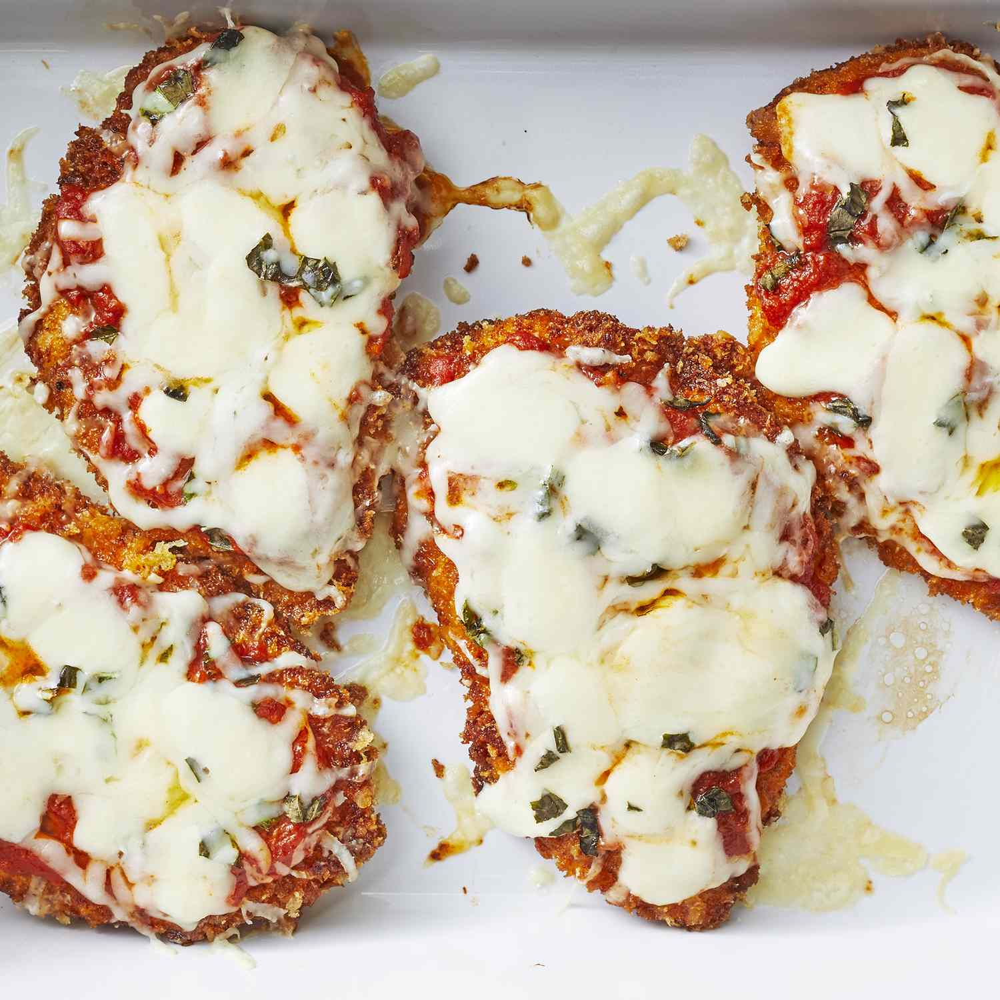

This Chicken Parmesan recipe prioritizes a crispy crust by avoiding sauce under the cutlets and instead using a panko and Parmesan breading that is pan-fried until golden. The chicken is then baked with a light topping of tomato sauce and a blend of mozzarella, provolone, and Parmesan cheeses. The result is a less soggy, more flavorful alternative to typical restaurant-style preparations.